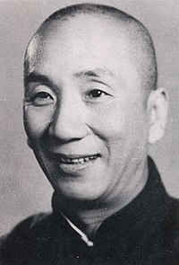

|  |
Ip Man
Yip Man débuta l'apprentissage du wing chun à 9 ans4, auprès de Chan Wah-shun, qui résidait dans le temple du clan, au centre de la propriété familiale. Il fut le dernier élève du maître, celui-ci l'ayant accepté à l'âge de 70 ans. En raison de la vieillesse de son maître, Yip pratiqua essentiellement auprès de Ng Chung-sok (second plus ancien disciple) et Lui Yu-chai. Chan mourut trois ans après le début de la formation de Yip. Dans ses dernières volontés, il aurait invité Ng à continuer son enseignement auprès de Yip. Yip fut ainsi invité à rencontrer cet homme, Leung Bik, fils de Leung Jan (maître de Chan Wah-shun). Dans un échange d'assauts amicaux, Yip se fit terrasser. Il continua par la suite à apprendre le wing chun, auprès de Leung Bik, découvrant notamment les techniques sophistiquées et les applications théoriques. À 24 ans, Yip retourne à Foshan. Il rejoint l'armée du parti nationaliste chinois (Kuomintang) durant la seconde guerre sino-japonaise, puis occupe pendant quelques années les fonctions de capitaine des patrouilles de police de Foshan5. Il enseigne le wing chun à plusieurs de ses subordonnés, parents et amis, sans ouvrir d'école d'arts martiaux. Certains de ses élèves les plus connus sont Lok Yiu, Chow Kwong-yue (周光裕), Kwok Fu (郭富), Lun Kah (伦佳), Chan Chi-sun (陈志新) et Lui Ying (吕应). Parmi eux, Chow Kwong-yue était considéré comme le meilleur, mais il s'est finalement consacré au commerce et a cessé de pratiquer les arts martiaux. Kwok Fu et Lun Kah continuèrent à enseigner par la suite. Chan Chi-sun et Lui Ying déménagèrent plus tard à Hong Kong, mais aucun d'entre eux n'accepta d'étudiant. Yip vécut avec Kwok Fu au cours de la seconde guerre sino-japonaise, et ne revint à Foshan qu'après la guerre, où il poursuivit sa carrière comme agent de police. |
Voici la lignée martiale de Yip Man, selon l'un de ses propres manuscrits Source de la branche wing chun (詠春拳派源流), texte non publié de son vivant, rédigé vers 1965-1966 comme introduction d'une future « Association de wing chun »10 :
Adaptations cinématographiques
| Details | Description |
|---|---|
| Nationalité | Chinoise |
| Pofession | Officier de police |
|
|
{kind=link}